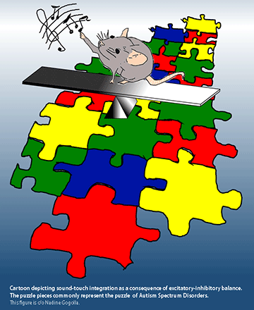

News Archives : 2014 : Rescuing Sensory Integration in Mouse Models of Autism [Hensch Lab]
by Parizad Bilimoria
July 31, 2014
Many people with autism display atypical sensory processing, and in independent studies, abnormalities in a deep brain structure known as the insula. A new study from researchers at Harvard reveals that across four different mouse models of autism, the development of sound-touch integration—important for social play in rodents—is impaired. This impairment reflects deficits in inhibitory circuit maturation in the insula and can be rescued by boosting inhibitory neurotransmission early in brain development.
The study, appearing July 31st in Neuron, was headed by Takao K. Hensch, a professor in the Department of Molecular and Cellular Biology and Center for Brain Science at Harvard University and the Department of Neurology at Boston Children’s Hospital. “Despite ample evidence in humans that the insula is deeply involved in hallmarks of the social brain, such as empathy, pain and urges, this is the first attempt to characterize its development in an experimentally tractable model,” Hensch said, also director of the National Institute of Mental Health-funded Conte Center at Harvard, focused on developmental origins of mental illness. His team developed an assay for visualizing and quantifying sound-touch integration in the mouse insula by imaging intrinsic fluorescence of flavoproteins directly reflecting neuronal activity.
Led by Nadine Gogolla, now a Group Leader at the Max Planck Institute of Neurobiology in Germany, the team zoomed in on the insular cortex of one particular mouse model of idio-pathic autism, an inbred strain called BTBR. A group of inhibitory interneurons already suspected in autism and other psychiatric disorders, the parvalbumin basket cells, were afflicted—as demonstrated by decreased expression of inhibitory marker proteins and electrophysiological recordings. While strengthening inhibitory neurotransmission with a benzodiazepine early in postnatal development prevented the deficits in multisensory integration, the same treatment proved ineffective in adults.
These data suggest that there may be a critical period for maturation of multisensory integration in the insula, which is regulated by excitatory/inhibitory balance and crucial for healthy social development. Further studying this critical period may help researchers gain a better understanding of the core pathology in autism and other psychiatric disorders where multisensory integration is affected, and ultimately, may facilitate the discovery of novel therapies or biomarkers for early diagnosis. It will likely also enhance our knowledge of how the insula, long considered a mysterious part of the brain, develops and functions in neurotypical individuals.
Intriguingly, the rescue of multisensory integration with drug treatment in young BTBR mice correlates with an improvement in repetitive grooming behavior, an established phenotype in many mouse models of autism. Since the BTBR mice are hyper-responsive to sound but show a weaker insula response when sound and touch stimuli are presented together, the excessive grooming behavior—long viewed as pathologic—could actually be an adaptive response. This theory intrigues Hensch, who’d like to investigate further whether the voluntary tactile stimulation afforded by self-grooming in these mice is being used to dampen the heightened insular activation caused by undesired visceral or auditory input—and whether these observations can provide new insight into repetitive behaviors and sensory processing abnormalities in human autism which often share these symptoms.
In addition to funding from the National Institute of Mental Health, the researchers received support from the National Institute of General Medical Sciences, the Human Frontier Science Program, the Charles A. King Trust, and the Nancy Lurie Marks Family Foundation.
